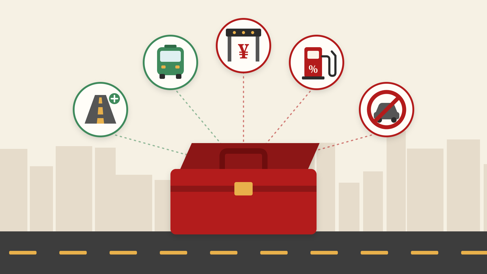

交通政策百宝箱

01引言
近年来，伴随着中国快速的城市化过程，交通问题也常常会成为社会舆论的关注点。拥堵、事故、污染，一系列交通引发的城市问题在城市居民的日常生活中变得越来越严重，而政策制定者们也常常展开激烈的讨论，以解决这些问题。在经济学理论上，我们将这些问题统称为“交通的外部性问题”，而经济学家们从经济学理论出发，已经提出了一系列政策工具来解决这些交通外部性问题。那么，这些政策工具真的有效吗？
在讨论这个问题之前，我们不妨先将目光投向交通政策的“百宝箱”，来看看到底有哪些可行的政策工具。供给和需求是经济学的核心问题，因此，这些政策工具要么着眼供给侧，要么立足需求侧。在供给侧，常用的政策工具包括扩建道路、建设公共交通等；而在需求侧，经济学家则提出了拥堵费、燃油税、针对性限行等政策措施。
02供给侧的政策工具
首先，让我们看一看供给侧的政策工具，第一个，也是最符合大众直觉的政策工具，是扩建道路，而扩建道路的核心目的是解决城市居民时常诟病的拥堵问题。原理很简单，如果通行的车辆数量不变（需求固定），那么道路修得更好了，自然拥堵问题就解决了。但事实真的如此吗？不一定，因为需求可能会发生变化。1962年，交通学者Anthony Downs提出了“引致需求”理论，大意是说，道路修的更好会吸引更多人开车，导致交通需求同步增加，从而抵消其缓解拥堵的设计效果。在后续的一些年里，各国的交通部门和许多经济学者通过数据分析了这一观点，大多证实了这一结论。例如，两位著名城市经济学者Gilles Duranton和Matthew A. Turner于2011年在AER上发表了论文《The Fundamental Law of Road Congestion: Evidence from US Cities》，用美国的数据发现扩建道路无法缓解拥堵。这一结果被称为“道路拥堵的基本定律”。
另一个供给侧的政策工具是建设公共交通。这一政策工具的理论基础来源于Herbert Mohring在1972年发表于AER上的文章，在这篇文章中，他提出一种关于公共交通供给的理论，后来被称为“莫林效应”。莫林效应指的是这样一种现象：当公交服务频率随需求上升而增加时，平均等待时间减少，从而使单位出行成本下降，产生规模报酬递增。例如，假设乘客在一小时内随机到达公交车站，而公交车每小时发车一次，则平均等待时间为30分钟。如果每小时的乘客数量增加到足以支撑每小时两班车的水平，则平均等待时间将降至15分钟。也就是说，新增乘客的出现降低了原有乘客的出行成本。莫林效应指出了公共交通的规模报酬递增现象，从而为增加公共交通供给这一政策工具提供了理论基础。
那么，增加共同交通的供给是否真的有利于改善拥堵问题？2014年的一篇AER论文利用一个巧妙的外生事件提供了答案。利用一个简单的选择模型，他们预测公共交通使用者很可能是那些沿着交通拥堵严重路段通勤的个体，因此这些人的出行选择对缓解拥堵具有较高的边际影响。利用2003年洛杉矶公共交通工人罢工的自然实验，他们发现当公共交通停止运营时，高速公路的平均拥堵延误增加了47%，这表明公共交通的供给在很大程度上缓解了拥堵。
03需求侧的政策工具
供给侧政策的优点是在政治上具有较强的可行性，可想而知，普罗大众不会拒绝政府修建更好的道路，或者是修建更多的地铁和公交。然而，问题也非常显而易见，供给侧的政策工具，往往都需要大量的财政支出，而钱从哪里来一直是一个非常棘手的问题。例如，纽约市政府在2024年对大都会运输署（MTA）提供了超过100亿美元的运营补贴；而北京市政府在2011年给予公共交通系统的补贴已经高达170亿人民币，近年来这一数值可能更高。钱从哪里来呢？收税是一个很自然的想法。事实上，在实践中，一个常规的操作是“取之于民，用之于民”，即同时采用需求侧的税收政策工具和供给侧的公共补贴工具，以前者所得来支持后者。
在税收工具中，一个讨论最多的工具是拥堵税。从经济学的视角看，拥堵税作为一种庇古税，理论上可以成为“第一最优”（first-best）的政策工具，因为通过差异化的税率，直接将消费者的边际成本提高到等于边际社会成本的水平，从而解决了外部性问题，实现了社会最优。然而，尽管拥堵税在理论上具有经济学家们喜欢的“优良性质”，但在实践中并不多见，少数的实践案例也更多是统一税率的“第二最优”（second-best）设计。目前为止，世界范围内最典型的三个案例分别是新加坡、伦敦和斯德哥尔摩，分别于1975年、2003年和2006年开始实施。拥堵税产生了显著的效果，降低了城市核心区的交通拥堵，也同步减少了交通事故和空气污染两大其它外部性问题。例如，Colin P. Green等人2016年在JPubE上发表的论文研究了伦敦的拥堵费政策，发现其减少了交通事故。而Emilia Simeonova等人2021年发表在JHR上的论文则表明，斯德哥尔摩的拥堵费使环境空气污染降低了5%至15%，并减少了年幼儿童急性哮喘发作的发生率。2025年1月，纽约市克服了种种阻力，终于得以实施拥堵收费，一篇最新的NBER工作论文表明，拥堵收费实施后，其曼哈顿CBD区域的车辆通行速度提高了15%。
然而，征收拥堵费在政治上面临着非常大的阻力。以中国的北京市为例，Jun Yang等人2020年发表在AEJ: Policy上的论文指出，如果北京市因地而异的实施每千米0.3-3元的“第一最优”拥堵费设计，每年减少的拥堵会产生约等于15亿元的收益，同时征收的拥堵费能高达105亿元，这些钱可以覆盖北京市公共交通系统超过一半的补贴额度。事实上，在2016年，北京市交通委已初步制定交通拥堵收费方案，然而由于反对的舆论声过大，这一方案最终悄悄下线，从此中国再不闻征收拥堵费的声音。
那么，为什么公众会反对拥堵费的征收？主要是出于以下几个原因。第一，拥堵费可能会产生溢出效应，将公众的出行需求引导至其它地区。第二，政策的协调失灵可能会抵消拥堵税的效果，例如交通部门征收拥堵税的同时，其它部门鼓励购买燃油汽车。第三，拥堵税可能会导致低收入群体的通勤成本上升，从而加剧社会不公平。
正是由于这些舆论争议，拥堵税尽管是理论上的最优工具，但实践中却很难被采用。相比之下，燃油税是一种更加可行的政策工具。相比于拥堵税的定向开征，燃油税则是一种普遍性的消费税，往往被视为燃油价格波动的一部分内化到消费者决策中，因此不易被消费者感知，面临的舆论压力相对较小，这正是 Stigler (1971) 的经典文章指出的，向所有人收税来补贴少部分人比向少数人收税来补贴多数人要面临更小的政治阻力。事实上，燃油税已经被广泛应用在实践中。例如，以中国为例，2009年中国进行成品油税费改革后，明确指出“提高现行成品油消费税单位税额，不再新设立燃油税”，燃油税事实上已经包括在燃油的消费税中。2015年后，中国燃油消费税的税率设定为每升汽油1.52元，柴油1.2元，这一税负大约为成品油价格的20%左右，一直延续至今。
对燃油税的经济学分析也已经有很多。例如，Parry和Small于2005年发表在AER上的论文分析了英国和美国燃油税的设计，并指出英国的燃油税（$2.8/gallon）过高，而美国的燃油税（$0.4/gallon）过低，并指出按行驶距离征税可以改善福利。Bento等人2009年的AER论文则分析了燃油税的分配效应，发现每加仑汽油价格每上涨1美分，其均衡消费量将减少约 0.2%，分配效应在很大程度上取决于额外财政收入的再分配方式。Li等人2014年的文章同样发现消费者对燃油税非常敏感，每加仑汽油的税价上升 0.05 美元，会导致汽油消费减少 0.86%；消费者对燃油税的反应显著强于对同样幅度的汽油价格（不含税）变动的反应。这些研究共同表明，消费者对于燃油税的增加高度敏感，燃油税可以作为一项政策工具来调节交通。然而，相比于最优的拥堵费而言，燃油税本质上仍然是一种次优选择，正如Knittel和Sandler的文章强调的，当消费者或企业未能面对其行为的真实社会成本时，市场结果将是低效的。他们的分析发现，通过征收燃油税来应对污染外部性，最优结果下也只能消除不到三分之一的外部性所造成的无谓损失。
如果说拥堵费是基于庇古理论的最优政策，燃油税是一种次优政策，那么限行则是一种更加直接的限制，有时能起到立竿见影的效果。北京市的限行政策是一个典型案例，一些研究对此展开了评估。例如，Viard和Fu在2015年的论文发现北京市的限行政策有显著的政策效果，降低了空气污染，与此同时也减少了弹性时间工作者的劳动供给；而Zhong等人2017年的研究同样发现北京市的限行政策降低了空气污染和患病率。这些结果表明，北京市的限行政策确实起到了立竿见影的效果。
然而，学过基础微观经济学的一年级本科生都能知道，简单粗暴的限行，带来的必然是效率的极大损失，同时由于消费者可能做出策略性应对（例如购买第二辆汽车来规避基于号牌的限行），有时不一定能实现政策设计的预期效果。比较经典的研究是Lucas Davis在2008年发表于JPE的文章，他利用墨西哥的汽车限行政策发现，汽车限行政策并没有显著降低污染，反而增加了通行的汽车数量，同时消费者会选择购买更高排量的汽车。Zhang等人利用哥伦比亚的数据也发现，由于替代行为（如购置第二辆车、使用替代出行方式）以及大气化学反应的影响，车牌限行政策可能反而会加剧空气污染。Gu等人的文章则研究了北京市的限行政策，发现了三种适应机制：在非限行时段或非限行日替代出行；获得一辆不受限车辆；以及违反相关规定。Barahona等人于2020年的RES论文则在已有研究的基础上，指出统一的限行政策可能会导致负面效应，即居民会购买高车龄/高排放的低价汽车来规避限行，并提出按车龄限行可以通过促进车队结构向更清洁的车辆转变，从而带来显著的福利提升，其效果可与报废补贴或基于排放的注册费等替代政策相媲美。这些研究共同表明，限行政策尽管在一定程度上能发挥效果，但同时存在非常巨大的效率损失，这是政策制定过程中一个必然的trade-off。
04总结
在上面的分析中，我们列举了五项常见的交通政策，包括供给侧的道路修建和公共交通，以及需求侧的拥堵费、燃油税和限行。综合这些已有的科学的经济学研究，我们大体上能发现，政策制定过程中总是面临这各种各样的权衡：提供更高质量的公共交通效果好、政策阻力小，但付出的成本大；限行可以起到部分直接效果，但面临效率损失和策略应对；拥堵费能实现社会最优，但政治阻力极大；燃油税则在一定程度上平衡了效率和政治阻力。交通政策的百宝箱中，我们不可能找到一个一劳永逸的解决方案，只能因地制宜、因时制宜，在特定的预算约束下寻找最优解。如何平衡公平与效率，平衡经济利益和政治阻力，都是对政策制定者的考验。
当然，交通政策的百宝箱中，远远不止本文所列举的这些，但限于篇幅，我们无法一一展开，有兴趣的读者可以跨越本文，去深入这一百宝箱挖掘更多的宝藏。或许有朝一日，本文的读者、未来的经济学家们可以发现更有效率的政策工具，从而更好的解决我们城市中面临的交通问题。
参考文献
- Anderson, M. L. (2014). Subways, strikes, and slowdowns: The impacts of public transit on traffic congestion. American Economic Review, 104(9), 2763-2796.
- Barahona, N., Gallego, F. A., & Montero, J. P. (2020). Vintage-specific driving restrictions. The Review of Economic Studies, 87(4), 1646-1682.
- Bento, A. M., Goulder, L. H., Jacobsen, M. R., & Von Haefen, R. H. (2009). Distributional and efficiency impacts of increased US gasoline taxes. American Economic Review, 99(3), 667-699.
- Cook, C., Kreidieh, A., Vasserman, S., Allcott, H., Arora, N., van Sambeek, F., ... & Turkel, E. (2025). The Short-Run Effects of Congestion Pricing in New York City (No. w33584). National Bureau of Economic Research.
- Davis, L. W. (2008). The effect of driving restrictions on air quality in Mexico City. Journal of Political Economy, 116(1), 38-81.
- Downs A. (1962). The law of peak-hour expressway congestion[J]. Traffic Quarterly, 16(3).
- Duranton, G., & Turner, M. A. (2011). The fundamental law of road congestion: Evidence from US cities. American Economic Review, 101(6), 2616-2652.
- Green, C. P., Heywood, J. S., & Navarro, M. (2016). Traffic accidents and the London congestion charge. Journal of Public Economics, 133, 11-22.
- Knittel, C. R., & Sandler, R. (2018). The welfare impact of second-best uniform-Pigouvian taxation: evidence from transportation. American Economic Journal: Economic Policy, 10(4), 211-242.
- Li, S., Linn, J., & Muehlegger, E. (2014). Gasoline taxes and consumer behavior. American Economic Journal: Economic Policy, 6(4), 302-342.
- Mohring, H. (1972). Optimization and scale economies in urban bus transportation. The American Economic Review, 62(4), 591-604.
- Parry, I. W. H., & Small, K. A. (2005). Does Britain or the United States have the right gasoline tax?. American Economic Review, 95(4), 1276-1289.
- Simeonova, E., Currie, J., Nilsson, P., & Walker, R. (2021). Congestion pricing, air pollution, and children’s health. Journal of Human Resources, 56(4), 971-996.
- Stigler, G. J. (2021). The theory of economic regulation. Bell Journal of Economics and Management Science, 2(1), 3-21.
- Viard, V. B., & Fu, S. (2015). The effect of Beijing's driving restrictions on pollution and economic activity. Journal of Public Economics, 125, 98-115.
- Yang, J., Purevjav, A. O., & Li, S. (2020). The marginal cost of traffic congestion and road pricing: Evidence from a natural experiment in Beijing. American Economic Journal: Economic Policy, 12(1), 418-453.
- Zhang, W., Lawell, C. Y. C. L., & Umanskaya, V. I. (2017). The effects of license plate-based driving restrictions on air quality: Theory and empirical evidence. Journal of Environmental Economics and Management, 82, 181-220.
本文原载于微信公众号「山河随想录」（转载自「香樟经济学术圈」），2025-10-05。
← 返回 Econ Matters